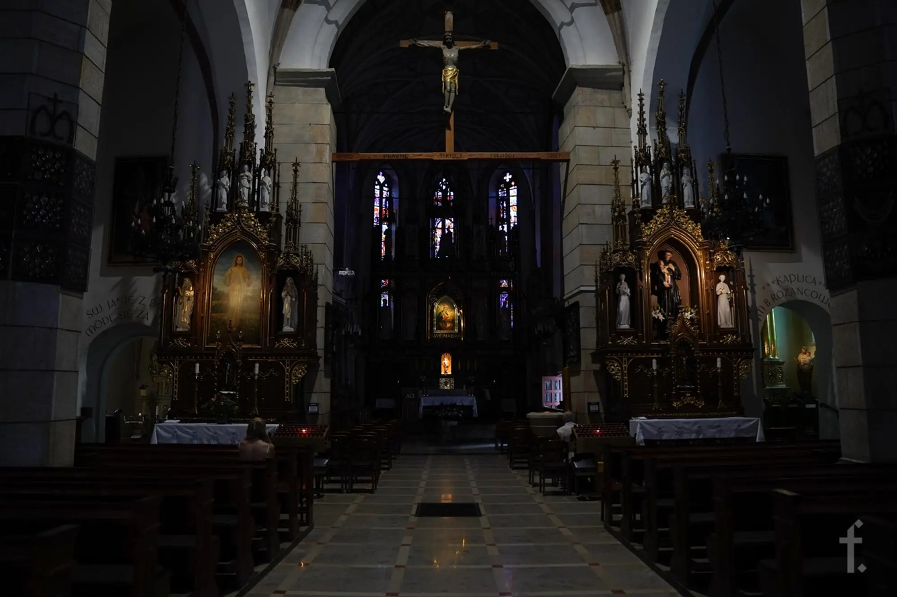

O nas
Nocna Droga Krzyżowa to nabożeństwo pasyjne organizowane przez wspólnotę wiernych, które łączy głęboką modlitwę z wysiłkiem fizycznym w wyjątkowej, nocnej atmosferze.
Inspiracją dla naszego wydarzenia jest Ekstremalna Droga Krzyżowa oraz wielowiekowa tradycja kalwaryjskich dróżek. Chcemy stworzyć przestrzeń, w której każdy uczestnik może w ciszy i skupieniu rozważać Mękę Pańską, pokonując trasę w ciemności, z dala od codziennego zgiełku.
Nasze cele
- Głębsza refleksja nad tajemnicą Krzyża
- Budowanie wspólnoty poprzez wspólną modlitwę i wysiłek
- Promowanie aktywnego przeżywania wiary
- Zachęcanie do osobistej pokuty i nawrócenia
Organizatorzy
Wydarzenie organizowane jest przez grupę wolontariuszy przy współpracy z parafią Franciszkanie Krosno.
Zapraszamy wszystkich – niezależnie od wieku i kondycji – do wzięcia udziału w tym wyjątkowym doświadczeniu wiary. Razem idziemy za Chrystusem.
